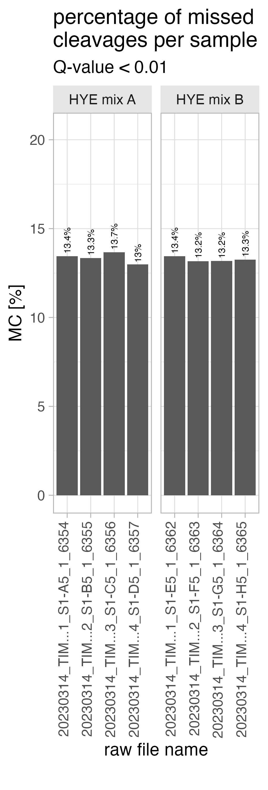

SpectroPipeR - step 1 - read Spectronaut data
a01_SpectroPipeR_read_Spectronaut_data.RmdRequirements
SpectroPipeR require the Quarto CLI. please make sure you installed it on your system ! https://quarto.org/docs/get-started/
SpectroPipeR also requires certain columns from the Spectronaut output report that are not included by default.
The following steps are advised:
- Proceed with the download and installation of SpectroPipeR as directed.
- Utilize the
Spectronaut_export_scheme()function to create the necessary Spectronaut report scheme (*.rs). - Import the generated Spectronaut report scheme.
- Conduct an analysis of your raw mass spectrometry data in Spectronaut and produce the output report using the imported report scheme.
Spectronaut output report file
Spectronaut output report should contain the following columns to work in SpectroPipeR:
| mandatory Spectronaut columns |
|---|
| R.FileName |
| R.Condition |
| R.Replicate |
| R.Run Date |
| R.Instrument Name |
| R.Raw File Name |
| R.MS1 Mass Analyzer |
| R.MS2 Mass Analyzer |
| PG.ProteinGroups |
| PG.Organisms |
| PG.IBAQ |
| PEP.StrippedSequence |
| EG.ModifiedPeptide |
| PEP.NrOfMissedCleavages |
| EG.UserGroup |
| EG.Qvalue |
| EG.Cscore |
| EG.NormalizationFactor |
| EG.TotalQuantity (Settings) |
| EG.SignalToNoise |
| EG.Identified |
| EG.ApexRT |
| EG.IntCorrScore |
| EG.DatapointsPerPeak |
| EG.DatapointsPerPeak (MS1) |
| FG.Charge |
| FG.Id |
| FG.XICDBID |
| FG.LabeledSequence |
| FG.ShapeQualityScore |
| FG.MS1Quantity |
| FG.MS2Quantity |
| FG.MS1RawQuantity |
| FG.MS2RawQuantity |
The Spectronaut_export_scheme() function can be utilized to generate a Spectronaut report template (*.rs). This template should then be imported into Spectronaut. Subsequently, the analysis of your mass spectrometry raw data should be conducted and documented using this template within Spectronaut.
Spectronaut_export_scheme(output_location = "../SpectroPipeR_test_folder")parameters
The global SpectroPipeR analysis paramaters is a list element containing the basic analysis project information SpectroPipeR needs to process the data.
| parameter | description |
|---|---|
| output_folder | character - output folder path (abs.) |
| ion_q_value_cutoff | numeric - Q-value used in Spectronaut analysis: Biognosys default is 0.01 = 1% error rate |
| id_drop_cutoff | numeric - value between 0-1 (1 = 100%); xx percent lower than median of ion ID rate => outlier |
| normalization_method | character - “median” or Spectronaut; auto-detection is per default ON, meaning if normalization was performed in Spectronaut this will be detected and preferred over parameter setting here; median normalization is the fallback option |
| normalization_factor_cutoff_outlier | numeric - median off from global median (4 means abs. 4fold off) |
| filter_oxidized_peptides | logical - if oxidized peptides should be removed from peptide quantification |
| protein_intensity_estimation | character - Hi3 = Hi3 protein intensity estimation, MaxLFQ = MaxLFQ protein intensity estimation |
| stat_test | character - choose statistical test: “rots” = reproducibility optimized test statistics, “modt” = moderate t-test (lmfit, eBayes), “t” = t-test |
| type_slr | character - choose ratio aggregation method: “median” or “tukey” is used when calculating protein values |
| fold_change | numeric - fold-change used as cutoff e.g. 1.5 |
| p_value_cutoff | numeric - p-value used as cutoff e.g. 0.05 |
| paired | logical - Should paired statistics be applied? |
filter_oxidized_peptides parameter
In SpectroPipeR, users can optionally set the
filter_oxidized_peptides parameter to TRUE to
remove peptides containing oxidized methionines while retaining their
unmodified counterparts. This filtering is recommended because
experiments using HYE species mixtures have demonstrated that
methionine-oxidized peptides exhibit significantly lower intensity and
suffer from markedly reduced relative quantitative precision compared to
their unmodified forms. Additionally, the variation between replicate
measurements is also substantially higher for oxidized peptides.
Consequently, removing methionine-oxidized peptides before
quantification and statistical analysis is the recommended approach in
SpectroPipeR to ensure optimal results.
HYE species mix experiements
The HYE species mix experiments were carried out with 4 replicates as described in A multicenter study benchmarks software tools for label-free proteome quantification. The data can be accessed via MassIVE (MSV000092489) - https://massive.ucsd.edu/ProteoSAFe/dataset.jsp?task=0f33717d84fd45b1a318ad40670022cc.
Spectronaut version 18.6 was used for data analysis. Following filtering, the ion data only included peptides containing methionine oxidation without prior carbamidomethylation, along with their unmodified counterparts. To determine quantitative ratios, mix A ion intensities were divided by the corresponding ion intensities from mix B.
HYE species mix experiements results regarding methionine oxidation


SpectroPipeR - output folder structure
The specified output folder is essential. If it does not exist it will be created. Inside a SpectroPipeR specific folder structure will be generated.

SpectroPipeR - read Spectronaut data module
The read_spectronaut_module() function serves to ingest
and process data from the Spectronaut software platform. This function
performs the following key tasks:
data loading: - Reads in the raw data from the Spectronaut report - Prepares the data for use within the SpectroPipeR analysis environment
ID analysis: - Provides feedback on key qualitative characteristics of the analysis - Includes metrics such as: - Identification (ID) rates - ON/OFF analysis results - Other relevant qualitative insights
read_spectronaut_module() workflow
- check parameters
- genrate output folders
- init log file
- load spectronaut report data
- check columns
- write input data to
01_input_datafolder in specified output folder - perform raw file name capping for better visibility inside plots
- reformat Q-value (EG.Qvalue = mixed column (character and numeric))
- (optional) ID condition filtering; keep only data for downstream analysis which passes condition-wise percentage filtering
- generate and export intermediate SDRF file
- export short summary of ID rates to log file
- performing counting of min. sample percentage where an ion was detected for user feedback in log
- count ID rates (ions, peptides, protein groups) by filtering for the specified Q-value in parameters list
- get ID rates for 1 or at least 2 peptide hits
- determine ion ID median to estimate ID outliers on that basis depending on the parameters list value
- generate ID tables and ID plots
- The ON/OFF analysis is conducted by filtering the data to include only proteins with a minimum of 2 peptide hits that are present in at least 50% of the sample replicates, with proteins meeting this criteria being classified as “ON” and those failing to do so being designated as “OFF”.
- generate ON/OFF analysis tables, plots and UpSet analysis
- extract missed cleavages rates globally and on run level
SDRF file
“Public proteomics data often lack essential metadata, limiting its potential. To address this, we present lesSDRF, a tool to simplify the process of metadata annotation, thereby ensuring that data leave a lasting, impactful legacy well beyond its initial publication.” Claeys, T. et al., 2023, Nat. Commun. 14, 6743
SpectroPipeR generates a intermediate SDRF tsv file, please use https://lessdrf.streamlit.app for finalizing file before submitting to a public repository. The “source name” is generated by using the R.Condition and R.Replicate column. Please carefully check column names and edit and refine them according to https://github.com/bigbio/proteomics-sample-metadata/tree/master/sdrf-proteomics.
For further information please read lesSDRF is more: maximizing the value of proteomics data through streamlined metadata annotation
ON/OFF analysis details
- determine number of replicates per condition
- filtering the ions for the used Q-value cutoff specified in the parameters
- filter for ProteinGroups with 2 or more peptides
- count ProteinGroups per condition
- calculate the in how many replicates the ProteinGroups was identified with 2 or more peptides with a Q-value cutoff below the specified one in the parameters
- filter the list for ProteinGroups found only at least 50% of replicates per condition
- generate the wide output
example code
# load SpectroPipeR
library(SpectroPipeR)
# example input file, bundled with SpectroPipeR package
example_file_path <- system.file("extdata", "SN_test_HYE_mix_file.tsv", package="SpectroPipeR")
# use default parameters list
params <- list(output_folder = "../SpectroPipeR_test_folder")
# step 1: load Spectronaut data module
SpectroPipeR_data <- read_spectronaut_module(file = example_file_path,
parameter = params,
print.plot = FALSE)
# checking parameters ...
# #*****************************************
# # READ SPECTRONAUT MODULE
# #*****************************************
#
# loading data ...
# write input data to output folder ...
# R.FileName capping ...
# 02_ID_rate/8_sample_analysis ATTENTION !!! ---> folder already exists - files will be replaced !!!
# _________ data set loaded with ... _________
# number of raw files = 8
# number of conditions = 2
# number of ions without filtering = 16654
# number of peptides without filtering = 12761
# number of Protein groups without filtering = 1503
# count profiled values ...
# performing counting of min. sample percentage where an ion was detected...
# ion Q-value cutoff < 0.01
# 12.5 % (1/8) is the min. sample percentage where an ion was detected
# performing ID rate filtering ...
# performing protein count over replicates (more than or equal 2 peptides) ...
# performing protein count (<2 and more than or equal 2 peptides) ...
# _________ ON/OFF analysis: _________
# ... filter with Q-value 0.01 ...
# ... filter for 2 peptides and min. present in 50% of replicates ...
# ... ON/OFF analysis write outputs ...
# _________ ID rate per sample: _________
# ions: median = 16205; min. = 15575; max. = 16541
# modified peptides: median = 12850; min. = 12409; max. = 13072
# stripped peptides: median = 12468.5; min. = 12042; max. = 12682
# protein groups: median = 1485.5; min. = 1470; max. = 1499read_spectronaut_module() outputs
The output in your specified output folder of the read_spectronaut_module() function should look like in this example:
figures
ID_counts_plot
The bar chart labeled as ID_counts_plot illustrates the number of identifications (IDs) discovered at the ion, peptide, and protein group levels, corresponding to user specified Q-value. It is advisable to select the same Q-value as defined in Spectronaut.
ID_counts_plot_ion_filter
The bar chart labeled as ID_counts_plot_ion_filter
depicts only the ions counts corresponding to user specified Q-value.
The dotted line in the graph represents the median count of ions, while
the solid line indicates the threshold criteria for defining an outlier
run. If the ‘id_drop_cutoff’ parameter is set to 0.3, this implies that
the cutoff criteria for identifying potential ID outliers is determined
by the formula median of ion count * (1-0.3). A run with an
ion count below this line would be highlighted in orange and labeled as
an ID outlier.
ID_ion_counts_plot
The bar chart, titled ID_ion_counts_plot, presents the ion identifications (IDs) in a stacked barchart format. It differentiates between ions discovered below the specified Q-value threshold (depicted in blue), those found above the threshold (shown in grey), and the profiled ions (represented in red).

missed_cleavages_sample_wise
The bar chart, titled ID_ion_counts_plot, depicts the number of missed cleavages per run. The text above the bar indicates the missed cleavage percentage.

missed_cleavages_sample_wise_PERCENTAGE
The bar chart, titled missed_cleavages_sample_wise_PERCENTAGE, shows the number of peptides with x-missed cleavages (y-axis left side) and the percentage (y-axis right side) per run.

missed_cleavages_global
The bar chart, titled missed_cleavages_global, depicts the missed cleavage rate for the whole project.

Detected_ProteinGroups__UpSetR__plot
The UpSet plot (**Detected_ProteinGroups__UpSetR__plot**) illustrates the outcome from the ON/OFF analysis. The ON/OFF analysis is conducted by filtering the data to include only proteins with a minimum of 2 peptide hits that are present in at least 50% of the sample replicates, with proteins meeting this criteria being classified as “ON” and those failing to do so being designated as “OFF”.
If you want to know about the principle of an UpSet plot visit https://en.wikipedia.org/wiki/UpSet_plot

tables
file_list.csv
The file_list.csv table contains 4 columns and gives a brief overview of the files used in the project
- R.FileName is the capped raw file name
- R.FileName_raw is the un-capped version of the raw file name
- R.Condition is the condition naming which was setup in your Spectronaut analysis
- R.Replicate is the replicate number which was setup in your Spectronaut analysis
| R.FileName | R.FileName_raw | R.Condition | R.Replicate |
|---|---|---|---|
| 20230222_Exp…anual_MixA_TR1 | 20230222_Exp_SM_MethMS_manual_MixA_TR1 | A_manual | 1 |
| 20230222_Exp…anual_MixA_TR2 | 20230222_Exp_SM_MethMS_manual_MixA_TR2 | A_manual | 2 |
| 20230222_Exp…anual_MixA_TR3 | 20230222_Exp_SM_MethMS_manual_MixA_TR3 | A_manual | 3 |
| 20230222_Exp…anual_MixA_TR4 | 20230222_Exp_SM_MethMS_manual_MixA_TR4 | A_manual | 4 |
| 20230222_Exp…anual_MixB_TR1 | 20230222_Exp_SM_MethMS_manual_MixB_TR1 | B_manual | 1 |
| 20230222_Exp…anual_MixB_TR2 | 20230222_Exp_SM_MethMS_manual_MixB_TR2 | B_manual | 2 |
| 20230222_Exp…anual_MixB_TR3 | 20230222_Exp_SM_MethMS_manual_MixB_TR3 | B_manual | 3 |
| 20230222_Exp…anual_MixB_TR4 | 20230222_Exp_SM_MethMS_manual_MixB_TR4 | B_manual | 4 |
ID_counts.csv
The ID_counts.csv table summarizes the ID counts.
- R.FileName is the capped raw file name
- R.Condition is the condition naming which was setup in your Spectronaut analysis
- R.Replicate is the replicate number which was setup in your Spectronaut analysis
- distinct_ions is the number of distinct ions identified with the user specified Q-value
- distinct_modified_peptides is the number of distinct peptide sequences incl. modification identified with the user specified Q-value
- distinct_peptides is the number of distinct stripped peptide sequences identified with the user specified Q-value
- distinct_proteins is the number of distinct protein groups identified with the user specified Q-value
- ion_ID_outlier yes / no indication if the run was marked as an ID outlier
| R.FileName | R.Condition | R.Replicate | distinct_ions | distinct_modified_peptides | distinct_peptides | distinct_proteins | ion_ID_outlier |
|---|---|---|---|---|---|---|---|
| 20230222_Exp…anual_MixA_TR1 | A_manual | 1 | 15992 | 12709 | 12337 | 1479 | no |
| 20230222_Exp…anual_MixA_TR2 | A_manual | 2 | 15775 | 12531 | 12159 | 1473 | no |
| 20230222_Exp…anual_MixA_TR3 | A_manual | 3 | 15715 | 12500 | 12131 | 1474 | no |
| 20230222_Exp…anual_MixA_TR4 | A_manual | 4 | 15575 | 12409 | 12042 | 1470 | no |
| 20230222_Exp…anual_MixB_TR1 | B_manual | 1 | 16418 | 12991 | 12600 | 1494 | no |
| 20230222_Exp…anual_MixB_TR2 | B_manual | 2 | 16490 | 13041 | 12649 | 1499 | no |
| 20230222_Exp…anual_MixB_TR3 | B_manual | 3 | 16541 | 13072 | 12682 | 1498 | no |
| 20230222_Exp…anual_MixB_TR4 | B_manual | 4 | 16479 | 13050 | 12660 | 1492 | no |
ion_ID_counts_fractions.csv
The ion_ID_counts_fractions.csv table summarizes the ID counts below or above the user specified Q-value and the count of profiled ions.
- R.FileName is the capped raw file name
- R.Condition is the condition naming which was setup in your Spectronaut analysis
- R.Replicate is the replicate number which was setup in your Spectronaut analysis
- <0.01 count of ions below a Q-value of 0.01
- >0.01 count of ions above a Q-value of 0.01
- profiled count of ions that were profiled
| R.FileName | R.Condition | R.Replicate | <0.01 | >0.01 | profiled |
|---|---|---|---|---|---|
| 20230222_Exp…anual_MixA_TR1 | A_manual | 1 | 15992 | 335 | 327 |
| 20230222_Exp…anual_MixA_TR2 | A_manual | 2 | 15775 | 438 | 441 |
| 20230222_Exp…anual_MixA_TR3 | A_manual | 3 | 15715 | 463 | 476 |
| 20230222_Exp…anual_MixA_TR4 | A_manual | 4 | 15575 | 543 | 536 |
| 20230222_Exp…anual_MixB_TR1 | B_manual | 1 | 16418 | 109 | 127 |
| 20230222_Exp…anual_MixB_TR2 | B_manual | 2 | 16490 | 91 | 73 |
| 20230222_Exp…anual_MixB_TR3 | B_manual | 3 | 16541 | 58 | 55 |
| 20230222_Exp…anual_MixB_TR4 | B_manual | 4 | 16479 | 83 | 92 |
missed_cleavages_sample_wise_PERCENTAGE.csv
The missed_cleavages_sample_wise_PERCENTAGE.csv table summarizes the missed cleavages counts per run.
- R.FileName is the capped raw file name
- MC_0 number of peptides with 0 missed cleavages
- MC_1 number of peptides with 1 missed cleavages
- MC_2 number of peptides with 2 missed cleavages
- total_peptide_count total number of peptides per run
- MC_peptide_count peptide count of missed cleavage peptides
- MC_percentage the percentage of missed cleavages per run
| R.FileName | MC_0 | MC_1 | MC_2 | total_peptide_count | MC_peptide_count | MC_percentage |
|---|---|---|---|---|---|---|
| 20230222_Exp…anual_MixA_TR1 | 10485 | 1756 | 96 | 12337 | 1852 | 15.01175 |
| 20230222_Exp…anual_MixA_TR2 | 10341 | 1725 | 93 | 12159 | 1818 | 14.95189 |
| 20230222_Exp…anual_MixA_TR3 | 10316 | 1721 | 94 | 12131 | 1815 | 14.96167 |
| 20230222_Exp…anual_MixA_TR4 | 10243 | 1707 | 92 | 12042 | 1799 | 14.93938 |
| 20230222_Exp…anual_MixB_TR1 | 10727 | 1776 | 97 | 12600 | 1873 | 14.86508 |
| 20230222_Exp…anual_MixB_TR2 | 10760 | 1791 | 98 | 12649 | 1889 | 14.93399 |
| 20230222_Exp…anual_MixB_TR3 | 10785 | 1800 | 97 | 12682 | 1897 | 14.95821 |
| 20230222_Exp…anual_MixB_TR4 | 10770 | 1792 | 98 | 12660 | 1890 | 14.92891 |
protein_count__strippedPEP_without_Qvalue_cut.csv
The protein_count__strippedPEP_without_Qvalue_cut.csv table summarizes the protein group count without additional Q-value filtering with at least 2 peptides or below 2 peptides.
- R.FileName is the capped raw file name
- R.Condition is the condition naming which was setup in your Spectronaut analysis
- R.Replicate is the replicate number which was setup in your Spectronaut analysis
- protein_count protein group count
- number_of_peptides indicates if it is the fraction below 2 peptides per protein group (<2) or the fraction of protein groups that have at least 2 peptides (>=2)
| R.FileName | R.Condition | R.Replicate | protein_count | number_of_peptides |
|---|---|---|---|---|
| 20230222_Exp…anual_MixA_TR1 | A_manual | 1 | 169 | < 2 |
| 20230222_Exp…anual_MixA_TR2 | A_manual | 2 | 169 | < 2 |
| 20230222_Exp…anual_MixA_TR3 | A_manual | 3 | 169 | < 2 |
| 20230222_Exp…anual_MixA_TR4 | A_manual | 4 | 169 | < 2 |
| 20230222_Exp…anual_MixB_TR1 | B_manual | 1 | 169 | < 2 |
| 20230222_Exp…anual_MixB_TR2 | B_manual | 2 | 169 | < 2 |
| 20230222_Exp…anual_MixB_TR3 | B_manual | 3 | 169 | < 2 |
| 20230222_Exp…anual_MixB_TR4 | B_manual | 4 | 169 | < 2 |
| 20230222_Exp…anual_MixA_TR1 | A_manual | 1 | 1334 | >= 2 |
| 20230222_Exp…anual_MixA_TR2 | A_manual | 2 | 1334 | >= 2 |
| 20230222_Exp…anual_MixA_TR3 | A_manual | 3 | 1334 | >= 2 |
| 20230222_Exp…anual_MixA_TR4 | A_manual | 4 | 1334 | >= 2 |
| 20230222_Exp…anual_MixB_TR1 | B_manual | 1 | 1334 | >= 2 |
| 20230222_Exp…anual_MixB_TR2 | B_manual | 2 | 1334 | >= 2 |
| 20230222_Exp…anual_MixB_TR3 | B_manual | 3 | 1334 | >= 2 |
| 20230222_Exp…anual_MixB_TR4 | B_manual | 4 | 1334 | >= 2 |
protein_count__strippedPEP.csv
The protein_count__strippedPEP_without_Qvalue_cut.csv table summarizes the protein group count with Q-value filtering (e.g. <0.01) with at least 2 peptides or below 2 peptides.
- R.FileName is the capped raw file name
- R.Condition is the condition naming which was setup in your Spectronaut analysis
- R.Replicate is the replicate number which was setup in your Spectronaut analysis
- protein_count protein group count
- number_of_peptides indicates if it is the fraction below 2 peptides per protein group (<2) or the fraction of protein groups that have at least 2 peptides (>=2)
- Qvalue_below user specififed Q-value threshold
| R.FileName | R.Condition | R.Replicate | protein_count | number_of_peptides | Qvalue_below |
|---|---|---|---|---|---|
| 20230222_Exp…anual_MixA_TR1 | A_manual | 1 | 169 | < 2 | 0.01 |
| 20230222_Exp…anual_MixA_TR2 | A_manual | 2 | 174 | < 2 | 0.01 |
| 20230222_Exp…anual_MixA_TR3 | A_manual | 3 | 175 | < 2 | 0.01 |
| 20230222_Exp…anual_MixA_TR4 | A_manual | 4 | 184 | < 2 | 0.01 |
| 20230222_Exp…anual_MixB_TR1 | B_manual | 1 | 169 | < 2 | 0.01 |
| 20230222_Exp…anual_MixB_TR2 | B_manual | 2 | 172 | < 2 | 0.01 |
| 20230222_Exp…anual_MixB_TR3 | B_manual | 3 | 172 | < 2 | 0.01 |
| 20230222_Exp…anual_MixB_TR4 | B_manual | 4 | 165 | < 2 | 0.01 |
| 20230222_Exp…anual_MixA_TR1 | A_manual | 1 | 1310 | >= 2 | 0.01 |
| 20230222_Exp…anual_MixA_TR2 | A_manual | 2 | 1299 | >= 2 | 0.01 |
| 20230222_Exp…anual_MixA_TR3 | A_manual | 3 | 1299 | >= 2 | 0.01 |
| 20230222_Exp…anual_MixA_TR4 | A_manual | 4 | 1286 | >= 2 | 0.01 |
| 20230222_Exp…anual_MixB_TR1 | B_manual | 1 | 1325 | >= 2 | 0.01 |
| 20230222_Exp…anual_MixB_TR2 | B_manual | 2 | 1327 | >= 2 | 0.01 |
| 20230222_Exp…anual_MixB_TR3 | B_manual | 3 | 1326 | >= 2 | 0.01 |
| 20230222_Exp…anual_MixB_TR4 | B_manual | 4 | 1327 | >= 2 | 0.01 |
Detected_ProteinGroups__stripped_peptide_count_per_condition_raw_data.csv
The Detected_ProteinGroups__stripped_peptide_count_per_condition_raw_data.csv table summarizes the protein group count over replicates.
The table protein_count_over_replicates_min_2_pep_Qvalue_cutoff_0.01.csv is the same table without the peptide_count column.
The table Detected_ProteinGroups__UpSetR__plot__stripped_peptide_count_per_condition.csv summarize the same data in wide-tabular format containing the information about the peptide count per condition
- R.Condition is the condition naming which was setup in your Spectronaut analysis
- R.FileName is the capped raw file name
- peptide_count number of stripped peptide sequencing after filtering with the user specified Q-value
- present_replicate_count count in how many replicate the protein group was found present
- replicate_total_count total replicate count of the condition
- present_replicate_percentage percentage of in how many replicate the protein group was found present
| R.Condition | PG.ProteinGroups | peptide_count | present_replicate_count | replicate_total_count | present_replicate_percentage |
|---|---|---|---|---|---|
| A_manual | O75643 | 93 | 4 | 4 | 100 |
| A_manual | O95999 | 2 | 1 | 4 | 25 |
| A_manual | P05719 | 2 | 1 | 4 | 25 |
| A_manual | P08395 | 3 | 2 | 4 | 50 |
| A_manual | P0A6B4 | 2 | 1 | 4 | 25 |
| A_manual | P0A6K1 | 3 | 3 | 4 | 75 |
| A_manual | P0A742 | 2 | 1 | 4 | 25 |
| A_manual | P0A7B1 | 2 | 1 | 4 | 25 |
| A_manual | P0A9G8 | 3 | 3 | 4 | 75 |
| A_manual | P0ACN4 | 3 | 3 | 4 | 75 |
| A_manual | P0ACN7 | 2 | 1 | 4 | 25 |
| A_manual | P0ADR6 | 3 | 2 | 4 | 50 |
| A_manual | P0ADX7 | 3 | 3 | 4 | 75 |
| A_manual | P0AEW4 | 3 | 2 | 4 | 50 |
| A_manual | P0AFX9 | 3 | 3 | 4 | 75 |
| A_manual | P0C0L9 | 2 | 1 | 4 | 25 |
| A_manual | P16703 | 3 | 2 | 4 | 50 |
| A_manual | P19097 | 73 | 4 | 4 | 100 |
| A_manual | P23524 | 3 | 2 | 4 | 50 |
| A_manual | P27240 | 2 | 1 | 4 | 25 |
| A_manual | P27278 | 4 | 3 | 4 | 75 |
| A_manual | P30863 | 4 | 3 | 4 | 75 |
| A_manual | P31680 | 3 | 3 | 4 | 75 |
| A_manual | P33607 | 3 | 3 | 4 | 75 |
| A_manual | P37613 | 3 | 3 | 4 | 75 |
| A_manual | P39371 | 4 | 3 | 4 | 75 |
| A_manual | P52613 | 2 | 1 | 4 | 25 |
| A_manual | P60757 | 2 | 1 | 4 | 25 |
| A_manual | P66948 | 6 | 3 | 4 | 75 |
| A_manual | P75780 | 2 | 1 | 4 | 25 |
| A_manual | P75959 | 2 | 1 | 4 | 25 |
| A_manual | P76113 | 3 | 2 | 4 | 50 |
| A_manual | P76231 | 3 | 3 | 4 | 75 |
| A_manual | Q01082 | 111 | 4 | 4 | 100 |
| A_manual | Q08554 | 3 | 2 | 4 | 50 |
| A_manual | Q5D862 | 3 | 2 | 4 | 50 |
| B_manual | O75643 | 93 | 4 | 4 | 100 |
| B_manual | P19097 | 73 | 4 | 4 | 100 |
| B_manual | P22135 | 2 | 1 | 4 | 25 |
| B_manual | P32477 | 3 | 3 | 4 | 75 |
| B_manual | P33418 | 2 | 1 | 4 | 25 |
| B_manual | Q01082 | 111 | 4 | 4 | 100 |
| B_manual | Q12373 | 2 | 1 | 4 | 25 |
Detected_ProteinGroups__stripped_peptide_count_per_condition_raw_data.xlsx
The table Detected_ProteinGroups__stripped_peptide_count_per_condition_raw_data.xlsx holds the binary information about the ON/OFF analysis results.
- PG.ProteinGroups is protein group ID column
- conditions… the other columns highlighting in binary format (1 = present / 0 = not present) if a protein group was found present with the user specific criteria or not.
| PG.ProteinGroups | A_manual | B_manual |
|---|---|---|
| A0PJW6 | 1 | 1 |
| A1X283 | 1 | 1 |
| L0R6Q1 | 1 | 1 |
| O00330 | 1 | 1 |
| O00487 | 1 | 1 |
| O00571 | 1 | 1 |
| O00622 | 1 | 1 |
| O13516 | 1 | 1 |
| O14561 | 1 | 1 |
| O14579 | 1 | 1 |
| O14657 | 1 | 1 |
| O14818 | 1 | 1 |
| O14893 | 1 | 1 |
| O14929 | 1 | 1 |
| O14949 | 1 | 1 |
| O14981 | 1 | 1 |
| O15014 | 1 | 1 |
| O15061 | 1 | 1 |
| O15091 | 1 | 1 |
| O15160 | 1 | 1 |
| O15212 | 1 | 1 |
| O15355 | 1 | 1 |
| O15400 | 1 | 1 |
| O15460 | 1 | 1 |
| O15504 | 1 | 1 |
| O15511 | 1 | 1 |
| O15533 | 1 | 1 |
| O43172 | 1 | 1 |
| O43324 | 1 | 1 |
| O43665 | 1 | 1 |
The table protein_count_over_replicates_min_2_pep_percentage_WIDE_Qvalue_cutoff_0.01.csv summarize the data in the same way but here you can find the percentage over replicates in a wide-tabular format.
The table Detected_ProteinGroups__UpSetR__plot__binary_coded.csv contains the binary information of the ON/OFF analysis for the UpSet plot.